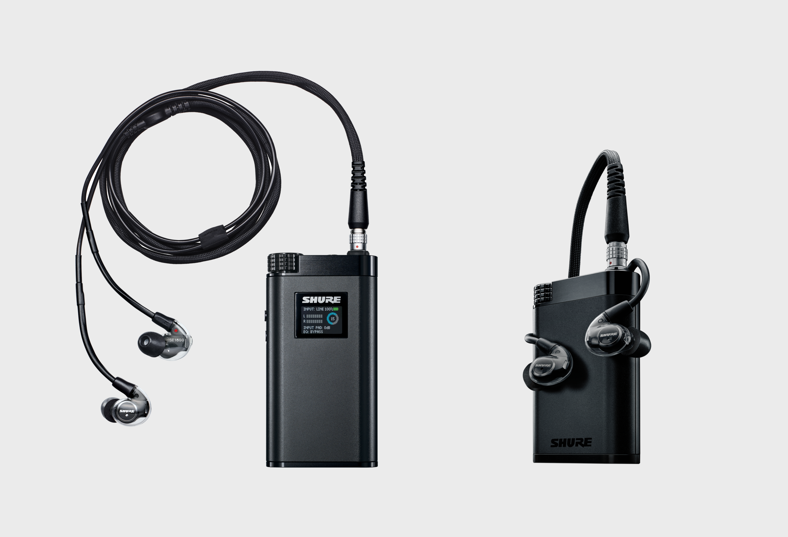
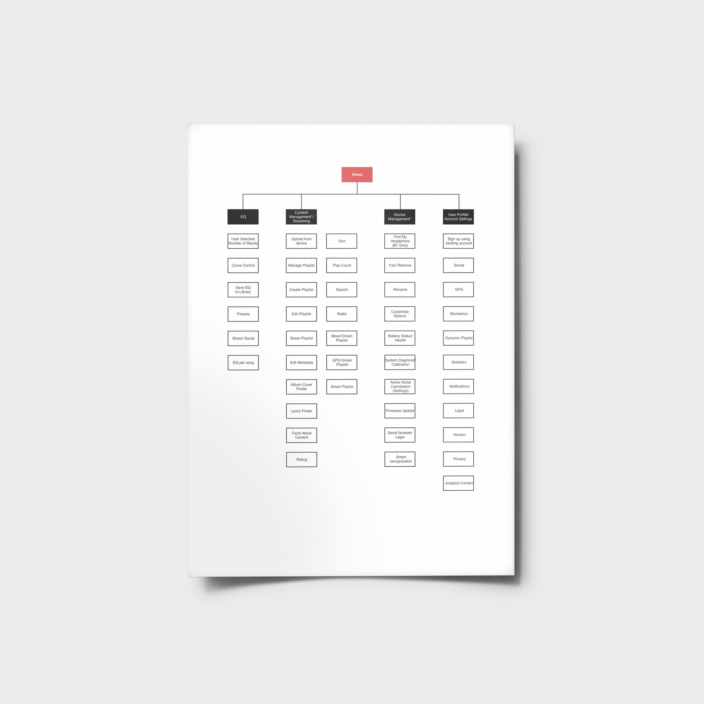
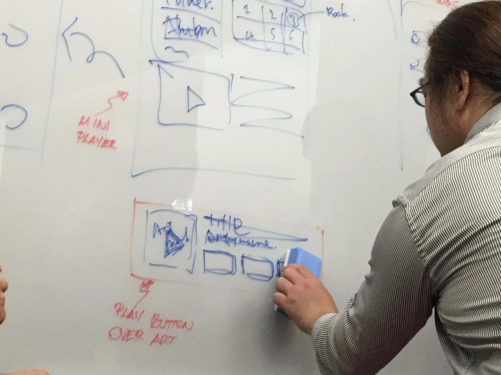
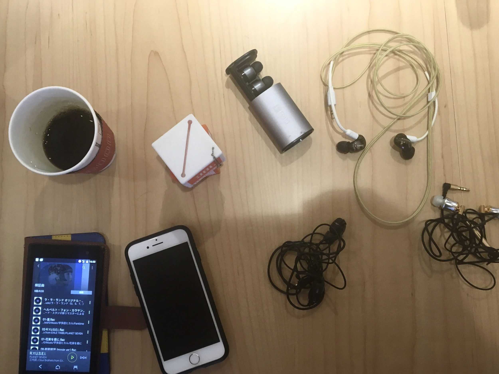
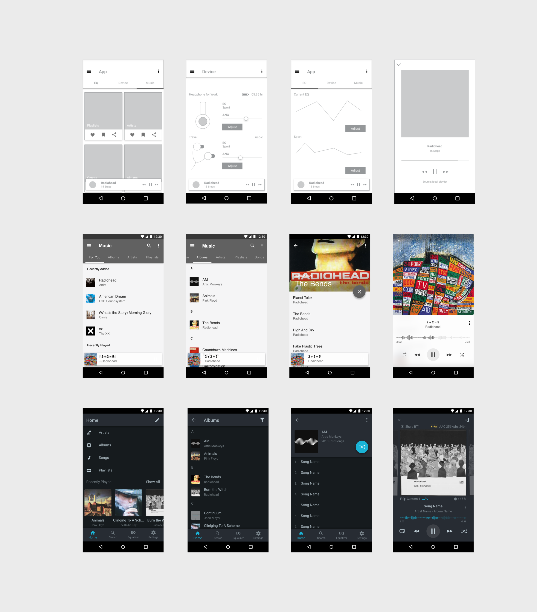

ShurePlus Play
Overview
0-1 mobile app design for Shure listening line

Goals
ShurePlus PLAY delivers high-resolution audio playing capability with intuitive navigation and control. The design goal is to create an application that serves the need for audiophiles on the go, at the same time providing Shure access to become a platform for configuring wireless earphones, headphones, and accessories.
Background
Shure announced KSE1200 electrostatic earphone system in March in Tokyo, which serves as a lightweight version of KSE1500 and with similar capability (Without digital output). The equalizer on KSE1500 now lives in the ShurePlus Play app, with more detailed control capability.

ShurePlus Play Team values the idea of the Agile process. Learning from the Lean UX mind set, the team started by low-fi sketching, defining IA to mid-fi prototyping in conjunction with creating an Atomic design guideline for ShurePlus Play.

By numerous competitor analysis and research sessions conducted internally and externally, we learned how users interact with the app. The team conducted co-design sessions in Tokyo with audiophiles to understand their need for an audiophile music player. Surprisingly, the team found out that for high-end audiophiles who usually purchase top quality listening devices, their expectation for high-end listening setup on the go is still lightweight and easy-to-use. This helped the team to shape the vision of the app - The app should provide easy navigation for their music library as well as quick access to configure the equalizer and the settings of the headphone.


The team took the feedback and reiterated based upon their expectation, then we ran usability testings internally and externally to make sure we meet the user need.
The team had limited resources and time to develop the mobile app. We used to have the idea of surfacing the music library and hiding everything in the hamburger menu. The such design required customized styling (The scrollable tab bar) on iOS and it's not a generally adapted pattern on iOS. Moreover, having two separate information architectures for different platforms would make the app hard to scale due to the limited resources we have. In the end, the team decided to utilize OS provided UI pattern to surface UI library, EQ and headphone control at the same level, which is scalable, easier to develop, and meet our business purpose of serving the app as a "listening platform"

Animation Case Study
The app has a special volume control and EQ control interface to cater to the hi-end market use, and the team was not sure the full screen control is intuitive or not. The team did a round of control study to figure out whether the special UI makes more sense or people prefer a standard slider to control the volume.
- Option 1 - Users 3D touch/ long press to open up the control dialogue, slide up or down to their designated option and release their finger to close the control.
- Option 2 - Users tap to open the standard dropdown/ slider and choose their option.

Option 1 — Full-screen control

Option 2 — Standard slider
Although option 2 is more intuitive to use, a lot of people prefer option 1 for the full screen control. The full screen control requires some learning curve but gives them the WOW factor and makes them want to play with EQ/volume more. The team then refined the prototype by combining the navigation of option 2 and the full screen mode of option 1.
ShurePlus PLAY app has been receiving positive reviews on both iOS and Android(4.0/5 on Google Play Store and 4.4/5 on App Store). PLAY Android active users have grown 300% from April 2019 to March 2020. Shure equalizer feature, which has been widely adopted by our users, more than 50% of current PLAY users take advantage of Shure EQ presets.